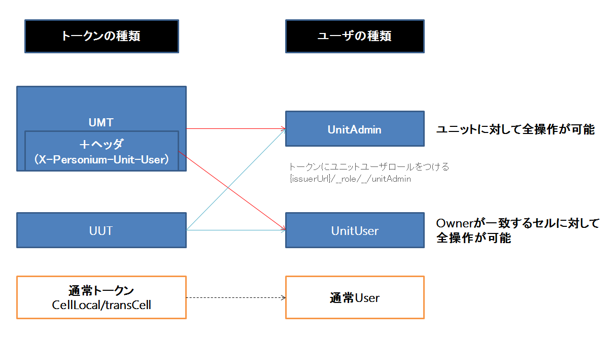

ユニットユーザとはセルのCRUD等ユニットレベルのAPIを操作する主体のこと。
ユニットユーザは、ユニットユーザトークン（Unit User Token (UUT)）またはユニットマスタートークン（Unit Master Token (UMT)）を用いてAPIアクセスを行う。
UUTはPersoniumをサービスとして提供するときに大きな役割を担うが、PersoniumはUUTを使わずUMTのみを使って運用することもできる。
サービス・プロバイダがUUTを使う最大の動機は、セルの課金先をまとめて管理することである。
すなわち、サービス・プロバイダが自身の顧客それぞれに異なるUUTを発行し、これを使ってセル CRUD APIアクセスをしてもらうことで以下が実現する。
一方で、一つの個人・組織が自身専用ユニットを持っている場合は、そのユニットに作られるセルはすべて自身の管理となるため、上記のような機能は不要である。
その場合はUUTのかわりにUMTを用いて運用を行っても問題はない。
ユニットユーザは識別子を持ち、それをユニットユーザ名と呼ぶ。
ユニットはユニットユーザ名の管理機構を持たず、外部の管理機構の存在を前提とする。

セルにはオーナー（owner）という隠し属性が存在する。
隠し属性というのはOData形式のAPIから内容を確認することはできないが、すべてのセルに一つ存在する属性である。
隠し属性の他の例としてはセル制御エンティティのaccountが挙げられる。
accountはhashedCredentialという名前のパスワードハッシュを格納する属性が定義されている。
オーナーはセル作成時に設定したら変更は行えない。
ユニット内で一意のトークンで、このトークンでアクセスするとUnit Adminとして扱われる。
personium-unit-config.propertiesの「io.personium.core.masterToken=」に任意の文字列を設定する。
X-Personium-Unit-Userヘッダに任意の文字列を指定することで、その文字列をユニットユーザ名とするユニットユーザとして動くことも可能。
例
{UnitURL}/{UnitUserName} というユニットユーザ名をオーナーとするセル作成
curl "{UnitURL}/__ctl/Cell" -X POST \
-H "Authorization: Bearer token" \
-H "X-Personium-Unit-User: {UnitURL}/{UnitUserName}" \
-d '{"Name":"cell1"}'{UnitURL}/{UnitUserName} というユニットユーザ名をオーナーとするセル一覧を取得
curl "{UnitURL}/__ctl/Cell" -X GET \
-H "Authorization: Bearer token" \
-H "X-Personium-Unit-User: {UnitURL}/{UnitUserName}"| 要素・属性名 | 内容 |
|---|---|
| IssueInstant | 認証した時刻 |
| issuer | ユニットが認めたURL。 personium-unit-config.propertiesの「io.personium.core.unitUser.issuers=」に認める任意のURLを記述 |
| Subject\NameID | ユニットユーザ名。任意の文字列。 |
| audience | ユニットルートURL |
| attribute | Unit User Role |
このトークンを発行されたアクセス主体をユニットユーザとよび、このようなSAMLアサーションを発行する認証プロセスをユニットユーザ認証と呼ぶ。
また、セルでのAccount認証でp_targetにユニットのルートURLを与えることで発行されるトランスセルトークンは、UUTの要件を満たしており、
ユニットの設定に特定のセルのURLを含めることでそのセルはUUT発行者となりうる。
personium-unit-config.propertiesのio.personium.core.unitUser.issuers={UnitURL}/{Cell}/を設定
curl "{UnitURL}/{Cell}/__auth" -X GET \
-d 'grant_type=password&username=user&password=pass&p_target={UnitURL}/'io.personium.core.unitUser.issuers は複数URL設定可能
personium-coreはユニットユーザのロールとして以下を認識する。
Token内でその他のロールが付与されていたとしてもこれを認識はしない。（無視する）
{UnitURL}/{Cell}/__role/__/unitAdmin ： ユニット管理者
このロールが付与されている場合、マスタートークン同様にそのユニットに対するあらゆる処理が許可されるのがユニット管理者ロールである。
V0では各種ユニット管理業務にマスタートークンが乱用されたが、このような運用はセキュリティ上望ましくない。
各種ユニット管理業務は、このロールのトークンを用いてAPI呼び出しを行うべきである。